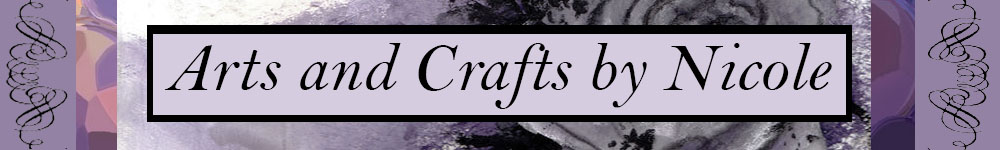

|  |
|
|
Home
Hello! One of my favourite hobbies are arts and crafts. When I was younger, I wanted to have a career in the field of arts (specifically animation or interior design). However I am studying criminology and so arts and crafts as a hobby allows me to pursue my passion without disrupting my career goals. As well it is a great way to de-stress during the school year when assignments and examinations are piling up. Lastly, arts and crafts allows me to make gifts for others during special occasions. I think handmade gifts are more personal and allow the gift to be specifically detailed around the receiver's likes. I have created pages that orient around different projects that I am either currently working on or completed, along with suggestions of stores and materials, as well as step by step intructions for a craft I made as a gift.
Cheers,
|